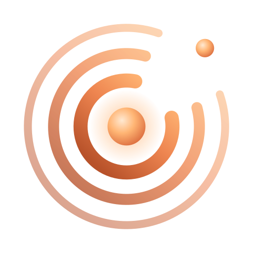

Design système · v1
Écho cuivre.
Une encre profonde, un cuivre qui chauffe, des ondes qui s'éloignent. Tout ce qu'Echoes montre, l'icône, la page de téléchargement et le tableau de bord, vient des jetons ci-dessous.
Icône
Un point, trois ondes, un satellite.
Le point central est ta machine. Les ondes partent, de plus en plus fines et pâles, comme un écho qui s'éteint. Elles s'ouvrent toutes dans la même direction, vers le satellite : la machine qui reçoit le travail et renvoie le résultat.
 echoes-icone.svg · 1024 × 1024, grille macOS (corps 824, carré continu)
echoes-icone.svg · 1024 × 1024, grille macOS (corps 824, carré continu)64
32
16

Couleur
Primitives.
La palette brute. Une page n'utilise jamais ces valeurs directement : elle passe par les rôles plus bas, qui s'inversent en mode sombre.
Couleur
Rôles.
Bascule le thème en haut à droite : les mêmes rôles prennent leurs valeurs sombres. Le texte sur fond respecte un contraste d'au moins 4,5:1.
| Jeton | Usage |
|---|
Typographie
La police du système, rien d'autre.
SF Pro sur Mac, Segoe UI sur Windows : aucune police téléchargée, rien qui sorte du réseau. Les titres serrent l'approche, les chiffres sont tabulaires.
display · 56/1,08title · 28/1,3lead · 20/1,5body · 16/1,55eyebrow · 12, capitalesmono · 13echoes run -- cargo build --releaseEspace et forme
Multiples de 4, coins généreux.
Espacements de 4 à 96 px. Rayons de 6 (code) à 24 (grandes surfaces) ; les pastilles et étiquettes sont entièrement arrondies.
Composants
Les briques.
Toutes dans assets/echoes.css, préfixées e-. Cibles tactiles de 44 px minimum.
$ echoes ls mac-mini ● 7/8 cœurs GPU 4 % imac ● 2/8 cœurs GPU 61 %
- Ouvre le fichierGlisse Echoes dans Applications.
- Colle le codeSur tes autres machines.
Premier lancement
macOS demande une confirmation la première fois.
Linux et ligne de commande
Une commande dans le terminal.
Règles
Ce qui fait Echoes, et ce qui le défait.
- Le cuivre pour une seule chose à la fois : l'action principale, ou ce qui est en train de travailler.
- Vert pour disponible, cuivre pour occupée, gris pour hors ligne. Toujours avec un mot, jamais la couleur seule.
- Mouvements de 120 à 480 ms, sans rebond, coupés si le système demande moins d'animations.
- Le dégradé cuivre-ambre réservé à l'icône, au bouton principal, aux jauges et à un mot du titre.
- Pas de police téléchargée, d'image externe ni de traceur : la page reste locale et privée.
- Pas de nouvelle couleur hors des primitives ; ajouter un jeton d'abord, l'utiliser ensuite.
- Pas d'icône tournée, recolorée en dehors du cuivre ou du monochrome, ni posée sur une photo.
- Pas d'ombre décorative : seules les cartes mises en avant et le bouton principal en ont une.